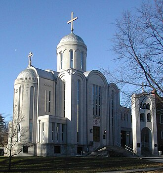

St. Nicholas cathedral
Nikolskaya Ploshchad 1 เซนต์ปีเตอร์สเบิร์ก (ใกล้จัตุรัสเธียเตอร์) เปิดบริการทุกวัน
สัญลักษณ์ของนักบุญนิโคลัส (นักบุญอุปถัมภ์ของนักเดินทาง) ในศตวรรษที่ 17 อนุสรณ์สถานหินอ่อนที่รำลึกถึงกะลาสีเรือผู้สูญหาย และสภาพแวดล้อมอันงดงามและเงียบสงบริมคลอง